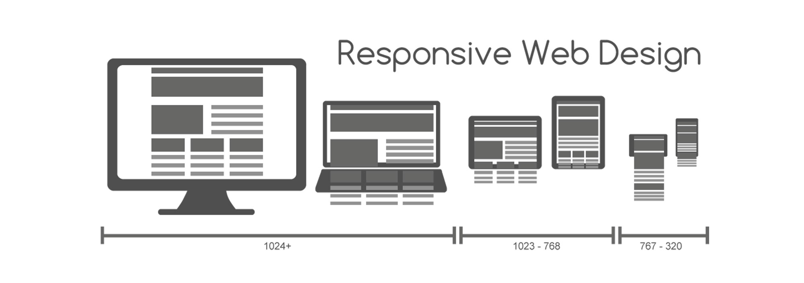
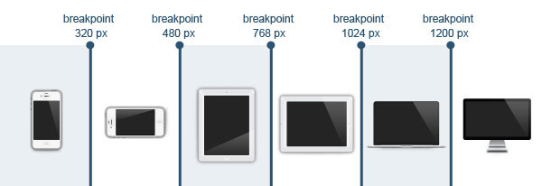
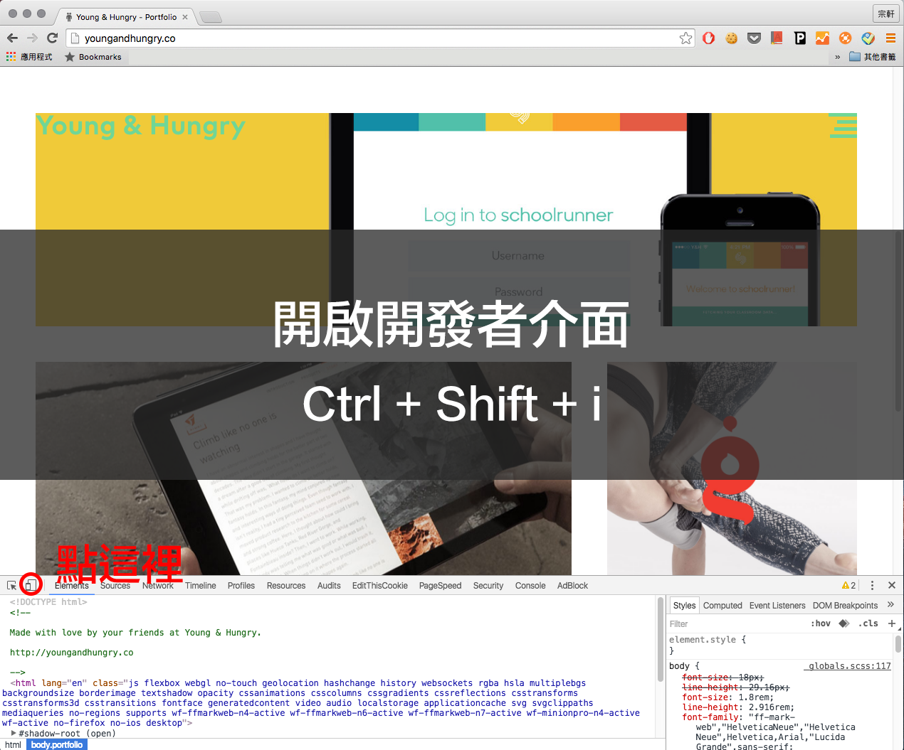
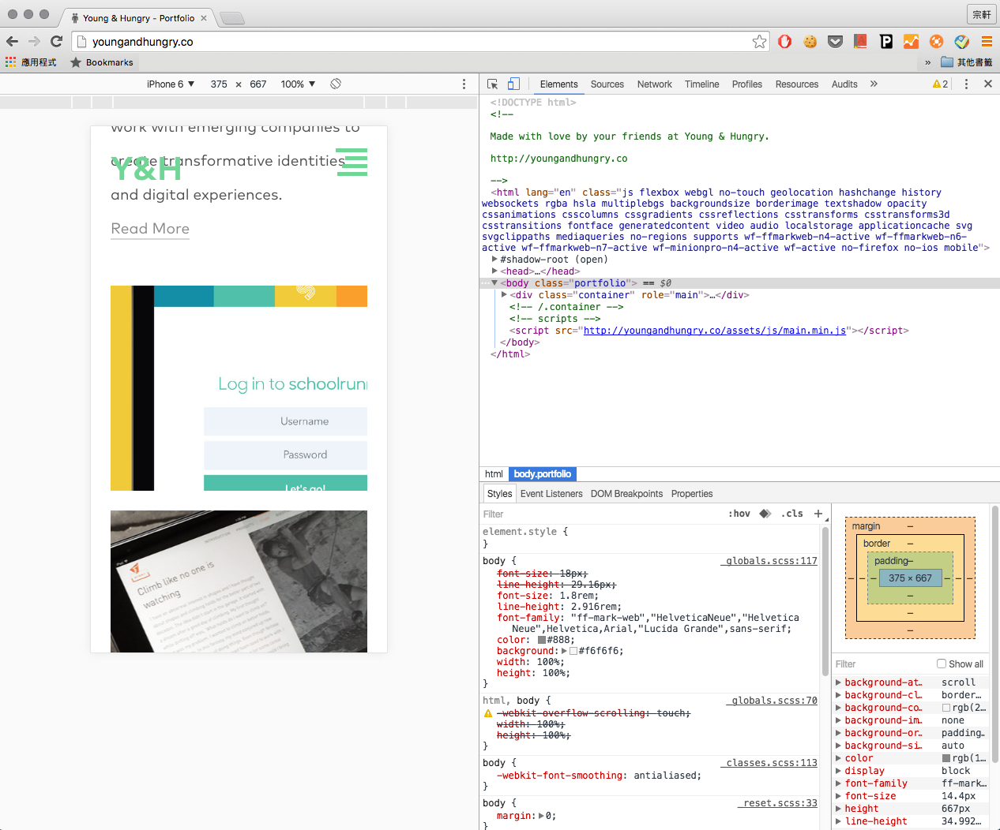

排切版實作

依據設計出來的 PSD 做 HTML、CSS 排切版。
RWD
自適應設計
Responsive Web Design
什麼是RWD?
- 伸縮自如的網站。
- 使用 Media Query 技術。
- 實例: wellington.govt.nz
優點
- 可同時適用不同裝置。
- 不需下載APP就能使用。
- 開發及維護成本與時間比APP低。
缺點
- 太過複雜的網站不適合。
- 網頁撰寫時間較久。
- 不支援過舊的瀏覽器。
如何選擇要不要RWD?
- $$$$$$$$$$$$$
- 功能及介面複雜度
補充資源
Q&A
製作前的準備
介面尺寸
最常設定的尺寸
每個尺寸都要設定？
- 設定主要的優先(320px、480px、768px、1024px以上)
- 特殊的再單獨設定。
測試其他裝置
交給 Chrome
測試多介面
到其他網站看看
HTML: viewport
加到 HTML 中的 head 標籤中，告訴瀏覽器依據的標準。
viewport
| 屬性 | 描述 |
|---|---|
| width | 設定畫面寬度 |
| height | 設定畫面高度 |
| initial-scale | 設定畫面的初始縮放比例 |
| minimum-scale | 設定畫面的最小縮放比例 |
| maximum-scale | 設定畫面的最大縮放比例 |
| user-scalable | 設定是否允許使用者改變縮放比例 |
Media Query
Media Query
用來區分對應不同介面的 CSS 的語法。
- CSS 3 語法
- @media
@media [media type] and [(media feature)]
@media screen and (min-width:500px) {.....}
TYPE
| 屬性 | 描述 |
|---|---|
| all | 所有裝置 |
| screen | 一般電腦螢幕 (含iphone, ipad) |
| speech | 朗讀式裝置 |
| 印表機 | |
| braille | 盲人點字器 |
| embossed | 盲人點字印表機 |
| handheld | 手機/ PDA裝置 |
| projection | 全螢幕投影輸出 |
feature
| 屬性 | 描述 |
|---|---|
| width | min-width | max-width | 寬度 | 最小寬度 | 最大寬度 |
| height | min-height | max-height | 高度 | 最小高度 | 最大高度 |
| device-width | min-device-width | max-device-width | 裝置寬度 | 裝置最小寬度 | 裝置最大寬度 |
| device-height | min-device-height | max-device-height | 裝置高度 | 裝置最小高度 | 裝置最大高度 |
| orientation (value: portrait | landscape) | 裝置方向 值:直立 | 橫向 |
範例
.content {
width: 200px;
height: 200px;
background-color: #ccc;
padding: 12px;
}
/* 寬度 < 768px */
@media screen and (max-width:768px) {
.content {
background-color: green;
}
}
/* 寬度 < 320px */
@media screen and (max-width:320px) {
.content {
background-color: red;
}
}
範例2
.div-default {
box-sizing: border-box;
width: 20%;
height: auto;
float: left;
border: 1px solid #e6e6e6;
padding: 14px;
text-align: center;
background-color: #efefef;
}
/* 寬度 < 768px */
@media screen and (max-width:768px) {
.div-default {
width: 50%;
background-color: green;
}
}
/* 寬度 < 320px */
@media screen and (max-width:320px) {
.div-default {
width: 100%;
background-color: red;
}
}
參考資源
動手做做看
用他來做 RWD。